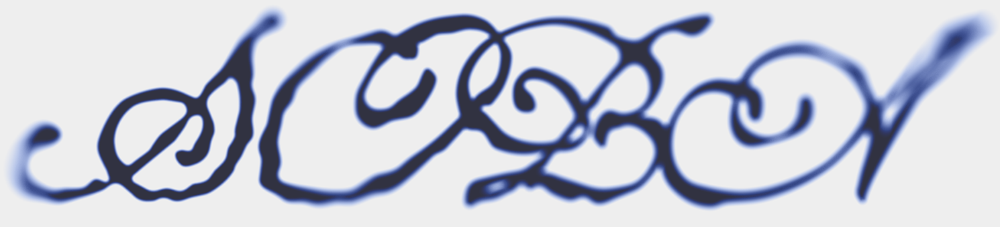

Manuscript
Long-Form Article
A responsive editorial page pairing Kristen Coogan's essay on design history and aesthetic innovation with a personal reflection on how understanding the cyclical nature of style can inform one's own creative practice.

Long-Form Article
A responsive editorial page pairing Kristen Coogan's essay on design history and aesthetic innovation with a personal reflection on how understanding the cyclical nature of style can inform one's own creative practice.
Collaborative Editorial
A collaborative editorial spread with a fellow classmate, translating a Vox feature on the gradient design trend into a richly visual web experience, strongly inspired by the mention of L.A. sunsets.
Multi-Chapter Book
A digital mini-book titled "Rethinking Graphic Design History," weaving together three texts that challenge how we teach and talk about design, from style cycles to people's design to the question of hero narratives.
Interactive Archive
A collaborative Are.na channel explorer with Ali Salifov, reimagined as a video game inventory screen. Browse a curated archive of game UI references through an interface that is itself an homage to the medium it documents.
Simulated Political Feed
A constructed social feed of political discourse where glossary terms are embedded within the posts themselves and always one tap away. Definitions open inline, right beneath the posts that use them.